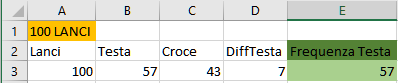
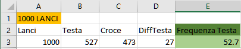
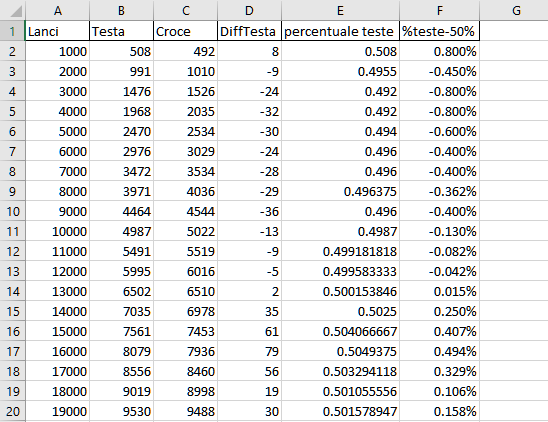

Ho fatto partire il programma ed ho esaminato i vari risultati ottenuti cambiando il numero di lanci.
10 Lanci
100 Lanci
1.000 Lanci
100.000 Lanci

Cosa si può osservare?
Qui si può osservare come la legge dei grandi numeri inizia a prendere forma. Nel lancio di una moneta la probabilità che esca Testa o Croce è del 50%, con un numero basso di prove la frequenza è lontana dal valore teorico della probabilità, si aggira infatti attorno al 60%-70%. Con un numero più grande di lanci però la frequenza si avvicina molto alla probabilità del 50%, abbiamo infatti una frequenza di 52.7% con 1.000 lanci e 50.4% con 15.000 lanci.